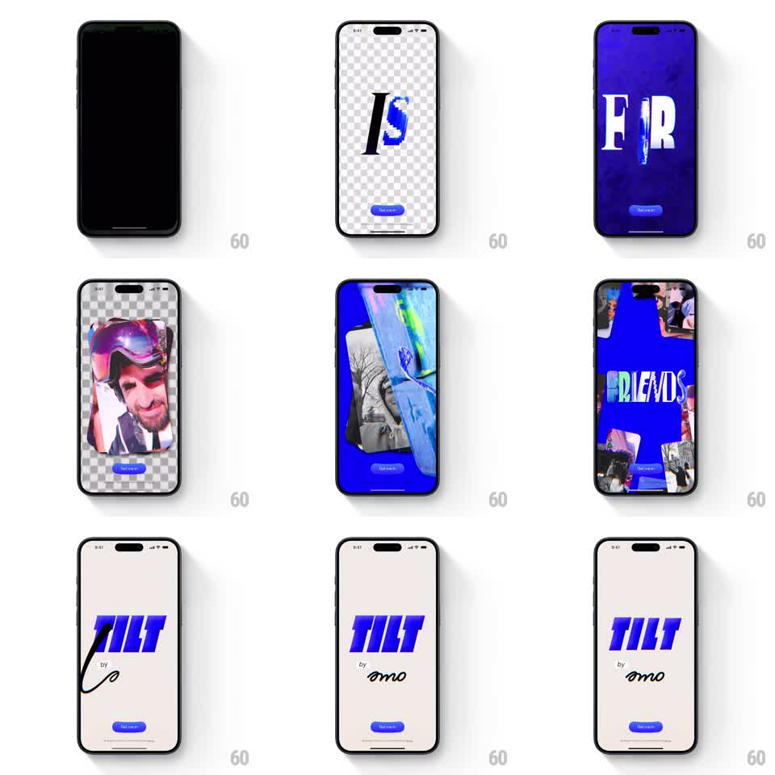

Media
Frame-by-frame

Rebuild this animation 1:1: Tilt's splash - a multi-stage sequence of morphing geometry, kinetic typography, stacked video cards, and a hand-drawn logo reveal.

Rebuild this animation 1:1: Tilt's splash - a multi-stage sequence of morphing geometry, kinetic typography, stacked video cards, and a hand-drawn logo reveal. ## Integration Integration: stack-agnostic spec - springs given as stiffness/damping, timed motions as duration + curve; map every value to your framework and animation library of choice. ## Scene Dark stage. The sequence runs through distinct beats: primitive shapes that morph and multiply, bold typography that cycles through words, a fanned stack of video cards, and a final hand-drawn logo that strokes itself on before the app opens. ## Motion spec Pattern: multi-stage splash choreography. - Beat 1 (0-1.2s): a single geometric shape scales in (spring ~320/24) and morphs through 3-4 forms (circle, square, blob) via border-radius/path interpolation, 300ms per form, snapping on a subtle beat. - Beat 2: the shape exits with a scale-down spin (300ms) as oversized words slam in one at a time (scale 1.4 to 1 with a hard spring ~450/26, 120ms per word), each replacing the last with a directional wipe. - Beat 3: 4-5 video cards fan into a stacked deck from center (each rotates to its resting angle +-8deg and offsets with a spring ~300/22, 60ms stagger); the top card plays, then cards shuffle (top card flies off-screen with a flick, deck advances, 250ms per shuffle). - Beat 4: the deck collapses to center and the hand-drawn logo strokes itself on (stroke-dashoffset draw, ~800ms, ease-in-out), holds 300ms with a marker-style underline swipe, then the whole composition scales up and fades into the app (350ms). ## Calibration - Each beat is shorter than it feels; the whole sequence should run under ~4.5s. - Beats hand off with overlap (~100ms) - never a dead frame between stages. ## Reduced motion Single fade from logo to app; no staged sequence. ## Don't miss - Typography is heavyweight and tight-tracked, slamming like title cards - no fades between words. - The video cards show real motion content; static thumbs kill the energy. - The hand-drawn logo keeps its imperfect stroke edges - do not smooth it into a vector-clean mark.